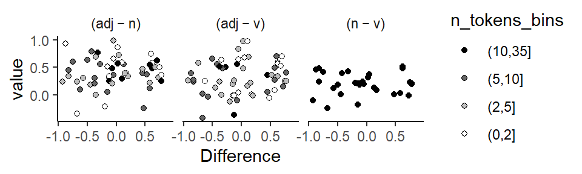
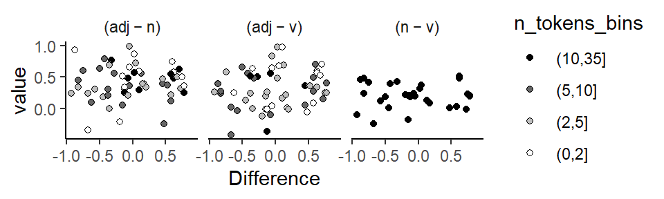

Warning: The `size` argument of `element_line()` is deprecated as of ggplot2 3.4.0.
ℹ Please use the `linewidth` argument instead.Warning: Removed 19 rows containing missing values or values outside the scale range
(`geom_point()`).
The behavior of organisms can be studied from different perspectives, which have been classified along a continuum from idiographic to nomothetic. This distinction, which was introduced by Windelband (1998)1, can, for our present purposes, be understood as referring to different levels of analysis. In this chapter we will discuss the relevance of the nomothetic-idiographic cline for the study of language and the analysis of corpus data. Both levels of analysis have advantages and limitations. An awareness of existing trade-offs can serve to inform our approach to corpus data, enhance our data-analytic repertoire and lead to more nuanced empirical insights. We will start with a delineation of the two styles and then discuss how they can be integrated into corpus data analysis. Graphical and numerical tools that add idiographic insights will be discussed. The final section is concerned with the relevance of the idiographic perspective in language data analysis more generally.
1 The distinction between idiographic and nomothetic perspectives has had noticeable repercussions in the field of psychology, where it was popularized by (Allport 1937, 22; 1962). See Thomae (1999) for an overview and Holt (1962) for a critical perspective.
The nomothetic research style is characterized by the pursuit of generalization. Its aim is to identify regularities across organisms, with a view, perhaps, to establishing general laws. As described by (Levy1970?), this branch of research activity includes “the development of generalizations of ever increasing scope, so greater and greater varieties of phenomena may be explained by them, and broader and broader reaching predictions and decision based upon them”. Accordingly, empirical work seeks to collect sufficiently large samples to establish a solid base for generalization. Data analysis involves the aggregation and averaging over individuals to derive broad-inference estimates that can be projected across classes of organisms, or organisms in general. Variation among units around these abstracted patterns is a minor concern at this level of analysis.
The idiographic orientation, on the other hand, shifts the main focus to the individual organism. This style of research is concerned with a comprehensive appreciation of each specific unit, offering a description of its patterns of behavior. The detailed profiles obtained by this strategy reveal consistencies and differences among units, showing stable configurations across units as well as the idiosyncratic features in each. Empirical studies therefore typically investigate fewer distinct organisms, but compile more extensive records of each. Hence, the method is sometimes referred to as the “small-n approach”.2 Data-analytic techniques involve the computation of summary measures at the level of the individual unit, whose integrity is preserved throughout all stages of analysis and interpretation.
2 Here, n refers to the number of units. This should not be taken to suggest that idiographic studies require fewer resources or deal with data sets of smaller size in general (Mook 1982, 223).
As originally conceived, the labels “idiographic” and “nomothetic” refer to different research methodologies or even scientific mentalities. Differences between the two styles therefore surface in all branches of research activity, extending from data analysis and research design to problem formulation, substantive priorities and philosophical outlook. Our focus will be on the relevance of these viewpoints for data analysis. We will see that the distinction becomes relevant when there is clustering in the data. As we have argued in Chapter Chapter 4, clustered data structures are typical for natural language data. We would therefore argue that the distinction between nomothetic and idiographic data-analytic philosophies is also of broader relevance for corpus data analysis.
The analysis of structured data layouts can put varying degrees of emphasis on the individual units (clusters) in the data. We might background them by only considering their average behavior. This would correspond to a nomothetic viewpoint, with the average smoothing over the underlying idiosyncracies to distill the information that is shared by the set of units. We will also refer to this empirical direction as the group-averaged, generalizing approach. The individual units submerge into the error term of the model, which collects the the residual variation not accounted for by the systematic component of the model.
On the other hand, we could also be interested in the underlying units as such, asking about the patterns the data form in each particular cluster. This would resemble, in some sense, the idiographic research style. Our attention could be focused on the specific unit, as we might consider each cluster an object of interest in its own right. We will refer to this kind of outlook as the unit-specific approach. A weaker form of unit-specificity would be show an interest not for each unit individually, but on the structure of the existing between-unit variability, that is, the degree of similarity or variability among units.
Let us consider a hypothetical example. Figure Figure 8.1 shows how the same set of data could be visualized from these two angles. In our illustrative example, a predictor of interest has three levels (conditions); these are shown along the horizontal axis. There are five subjects, and every subject is observed in each condition. Panel (a) shows a nomothetically inspired, group-averaged perspective on the data. In each condition, we average over the five speakers. This condenses the information into a three scores, which represent, in some average sense, how the typical speaker behaves in these conditions.
The data are of higher resolution, however – we also have information about the shape of the pattern that the predictor forms in each subject. An idiographically-inspired, unit-specific perspective on the data would foreground the configurations observed for each speaker. The corresponding visualization is shown in Figure Figure 8.1 b, where the individual profiles denote within-speaker conditional averages. This reveals a richer perspective on the data: It shows the degree of consistency of the group-statistical profile across individuals. Thus, it is not concerned primarily with the most typical score for a particular condition, but with the regularity of this pattern across individual speakers. In Figure Figure 8.1 b, we are asking about whether the hockey-stick pattern materializes in each individual.
Since both perspectives offer meaningful insights, our aim should be to combine features of both approaches in corpus data analysis.
Data analysis using regression modeling is typically geared towards group-statistical, nomothetic description. Our interpretation usually centers on those regression coefficients that reflect averages and differences between averages (the “fixed effects”). The visualization of regression models also rests on predicted averages for certain constellations of predictor values. As we will demonstrate in the following, a useful strategy is to supplement and enrich aggregating approaches with empirical indications at the level of the individual units – about pattern variability and consistency. To encourage a more balanced emphasis on different levels of analysis, let us contrast drawbacks of the nomothetic view with benefits of the idiographic angle.
We should emphasize that group-statistical summaries do play an important role in data-based work. By averaging over a set of scores, we gain information by discarding numerical details (Stigler2016?). Thus, if averages provide good summaries, they facilitate comparisons across partitions of the data. We will distinguish two types of averaging: (i) average scores computed over a set of numbers and (ii) average patterns computed over a set of profiles. Figure Figure 8.1 shows examples of both kinds: (i) each conditional average in panel (a) is an average over a set of 5 scores; and (ii) the hockey-stick profile in panel (a) is an average over a set of 5 patterns.
The important point for the ensuing discussion is that any kind of averaging treats the data points, or patterns, as interchangeable (e.g. Cobb 1997, 155–57), i.e. sufficiently similar to yield a valid abstraction. Thus, average scores should do a good job of indicating what the typical observation looks like. In Figure Figure 8.1 a, for instance, the average for condition 3 does a slightly better job than that for condition 1. Average patterns, on the other hand, should provide a valid summary of the individual profiles that go into this average. In Figure Figure 8.1 b, we see some variability in the subject-specific configurations. In general, average scores and patterns lose their appeal (and validity) if a closer look at the underlying cases raises doubts about the similarity, or interchangeability of the underlying numbers or profiles.
Before computing an average over a set of scores or patterns, then, we should inspect the data for threats to the validity of our summary measures. Since averages can mask a great deal of underlying variability, they should routinely be accompanied by measures of spread (e.g. the standard deviation or median absolute deviation). The dispersion of scores around their average gives us some idea of how “typical” the average case really is. This routine textbook advice is more difficult to apply to average patterns, however – especially if the profiles of interest are formed over three or more conditions. Visual examinations of unit-level patterns, as illustrated in Figure Figure 8.1 b, then provide invaluable assistance. Side-by-side comparisons of the average pattern and its constituent profiles will show the descriptive adequacy of the average pattern. We will consider additional techniques for the appraisal of pattern consistency across units further below.
If an average pattern is forced onto an ensemble of erratic profiles, it does not describe the typical pattern in the underlying set; it is rather an elusive abstraction that may in fact represent only a fraction of the units.3 A breakdown of the focal profile by individual unit can therefore urge a more cautionary interpretation of group-statistical trends. In cases where the extent of commonalities among units, as reflected in the smoothed overlay, diminish against the backdrop of unit-to-unit variability, averages may fail to articulate meaningful and interesting data features.
3 In some cases, average patterns can also distort the form of a relationship (Mook 1982, 193–94).
4 As noted by (Mook 1982, 230), “the odds are that you would see no need to test the statistical significance of this relationship. It has met the ’traumatic interocular test” […]: It hits you between the eyes.”
If, on the other hand, the profiles are, by and large, in good agreement with their balanced outline, this indicates that the group-statistical summary offers a good description of the typical pattern and does not obscure variation. We would then be more inclined to take the summary statement at face value. More importantly, however, observed regularities among units enable us to make a much stronger case for the factor of interest. By allowing – or forcing – the patterns to become directly visible in the individual units, we may be able to offer a simple and direct demonstration of the capacity of the focal predictor. Stable within-unit profiles offer a far more telling and convincing story than averaged summaries (Mook 1982, 228–29). Consistent configurations within individuals therefore add additional weight to the evidence and may in fact obviate the need for statistical significance testing.4
In fact, the demonstrability of between-unit consistency may be considered a more stringent criterion for judgments about the “significance” of an observed pattern. This is because, given a sufficiently large sample of units, “statistical significance” can be demonstrated for almost any kind of pattern. At some point, the size of the data will outweigh unit-to-unit heterogeneity. In terms of research strategy, larger samples are therefore not the primary key to establishing the validity and generality of statistical conclusions. If the averaged pattern reverberates steadily at the level of the individual units, however, this will add evidential force to our conclusions, providing more reassurance to the reader than any statistical testing procedure could.
Demonstrations of consistency also provide leverage when considering the generality of research findings (see, e.g., Sidman 1960, 51, 83). If we find corresponding patterns in a set of units, this provides statistical grounds for extending conclusions to unobserved cases. Consistency among units therefore enhances generality, especially if regularities emerge across a diverse set or different classes of units. Judgments as to the range of validity of research findings, which ultimately rest on extra-statistical, subject-matter grounds, can at least in part be informed by statistical analysis.
To summarize, we have seen that the particularization of empirical insights that is characteristic of the idiographic research style attaches great importance to the integrity of the individual unit. Instead of averaging over cases, it offers a description of the behavior of each unit under study. This angle reveals a level of detail that is beyond the reach of group-statistical approaches. A great deal of analytical leverage can be gained by combining group-averaged and unit-specific levels of analysis. We have accentuated potential disadvantages of group-statistical methods to encourage a shift of emphasis to the variability among units. A complementary approach will assess the consistency among units to arrive at a proper understanding of what the data are saying. While inconsistency among units would qualify and challenge average summaries, consistent profiles produce a coherent picture that is more than the sum of its parts.
Present information on the level of the individual unit
Bickerton (1971)’s criticism on the averaging triggered an increased focus on speaker-specific behavior, which led to a number of methodological advances. We will here discuss two exemplary studies, each with a methodological focus, which illustrate the degree of data-analytic sophistication that was developed early on in the variationist paradigm.
The first is G. Sankoff (1974), who used demonstrated how to look beyond aggregated results. The first graph type is concerned with the consistency of a linguistic factor across individuals. Figure 8.2 applies the graphing technique to the predictor LEXICAL CATEGORY, for which we observed the highest rate of g-dropping for verbs, followed by gerunds, nouns and then adjectives. The graph shows two things. First, the vertical spread of points reflects the variation in dropping rates across speakers within each lexical category. The range of dropping rates is marked visually using a rectangle, which extends from the lowest to the highest proportion of [in]-realizations. The mean rate for each column (i.e. each lexical category) is shown using a thicker crossbar. It is clear that each mean summarizes a highly variable distribution.
The second aspect highlighted in Figure 8.2 is the consistency of the verb > gerund > noun > adjective cline across speakers. Each speaker appears as a profile, connecting their dropping rates for these four lexical classes. To avoid a clutter due to noise and sampling variability, Figure 8.2 only includes individuals with at least 5 tokens for each lexical class. The focus is then on whether the overall configuration emerges within each speaker, which appears to be roughly the case.
Another display type used in G. Sankoff (1974) is mimicked in Figure 8.3. Again, only 15 speakers are shown, each with at least 5 tokens per lexical category. Black bars indicate the number of [in] tokens, white bars the number of [ing] tokens produced by an individual in a specific category. Individuals are ordered by g-dropping rate: Speaker 404, at the top, almost categorically uses the [in] pronunciation; speaker 116, at the bottom, shows the reverse behavior. We note that the dropping rate decreases fairly regulary from left to right for these 15 speakers.
The final graphing technique used by G. Sankoff (1974) has a different focus: the coherence of social groupings. In the example she uses, speaker-specific rates are plotted against speaker age, and the visual demonstration reveals a patterning that is so clear that no trend line is required. Figure 8.4 spplies the technique to the predictor EDUCATION.
Further, distinctly different graphical methods were proposed by Guy (1980), who distinguishes between qualitative and quantitative assessments. Qualitative checks focus on the rank order of factor levels and its consistency across individuals. A pairwise comparison chart is used to visually depict the consistency of ordering. A major obstacle is the data sparsity, and Guy (1980) demonstrates the use of graphical tools that include information about token counts and therefore the statistical precision of speaker-specific values.
Guy (1980) proposed a number of graphical techniques for assessing the consistency of data patterns across individuals. The illustrative analysis used in that study was concerned with a variable rule analysis of /t,d/ deletion, focusing on a number of grammatical and phonological constraints. To examine the generality across individuals of the average pattern obtained for a specific predictor, Guy (1980) used two general approaches, which we will illustrate using our data on (ING). We have observed that the average pattern is that verbs show the highest rate of g-dropping, followed by nouns and then adjectives. In other words, the realization as [ing] is most likely in adjectives, and less likely in nouns and verbs.
The first approach used by Guy (1980) is qualitative. It looks at whether the cline adjective > noun > verb is stable across individuals. Since there are three levels of the factor, there are three ordered comparisons we can make for each speaker. The first step is to obtain, for each speaker, the rate of g-dropping for each lexical category.Gelman et al. (2008) The three rates can then be compared, to see whether the material produced by this individual conforms to the general pattern.
Guy (1980) records the results of these comparisons in a pairwise comparison chart. This chart is a cross-table that lists all factors levels as column and row labels. It makes sense to arrange these levels according to the average pattern in the data, in decreasing order from left to right an from top to bottom. For each combination of factor levels (e.g. adjective - verb), there are two cells - one above the diagonal and one below the diagonal. If the within-speaker rank order of the two factor levels is consistent with the general pattern, a mark is entered into the cell below the diagonal, if the pattern is reversed in the data produced by this individual, the mark appears above the diagonal.
Figure 8.5 shows a pairwise comparison chart for the predictor Lexical Category. When interpreting this graph, our focus is on the degree to which marks occupy the area below the diagonal. If the center of visual gravity is located firmly towards the lower left corner of the cross table, this reflects consistency across speakers.
Figure 8.5, which uses dots as visual marks, deviates from the version that appears in Guy (1980) in one important regard: The original pairwise comparison use an additional mark if there is a draw between the factor levels - in our case, if the rate of g-dropping is the same in both contexts. This mark (a horizontal instead of a vertical bar) is then added to the cell below the diagonal. Since this adds to the visual weight below the diagonal, i.e. to the preferred outcome of the data examination, we prefer to exclude such draws from the chart.
A key issue that arises when studying these speaker-level comparisons is data sparsity. Thus, a speaker may have produced only few tokens for a specific factor level, which adds uncertainty to the comparison and the location of the mark in the pairwise comparison chart. This issue is discussed at length in Guy (1980), where information about the number of tokens buttressing a specific comparison is incorporated into graphs. As a measure of data quantity, the token count for the factor level with the smaller number of occurrences is used. This allows us to see whether inconsistencies may be attributable to paucity of data and the resulting sampling variation .
To add information of data quantity to the graph, the cells in the pairwise comparison chart are rearranged into stacked rows (Figure 1.3 in Guy 1980, 19). Unfortunately, the resulting visual form loses the direct interpretation in terms of the center of viusal gravity. We therefore opt for a different strategy, which allows us to include token count information directly into the pairwise comparison chart: Fill color reflects token count, with darker greyshades signalling more comfortable sample sizes.
The second approach used by Guy (1980) is quantitative in nature. Instead of noting the rank order of factor levels, it records and compares the proportionate difference obtained for specific comparisons across speakers. These differences are graphed against the data quantity measure, the smaller number of tokens for the pair of factor levels. Figure 8.6 shows such a quantitative factor pair chart for the predictor Lexical Category. The black vertical line indicates the average over all speakers, and the scatter of points allows us to note how consistent speakers are. Again, data sparsity is a potential issue. Since smaller token counts will yield more variable difference estimates, the point cloud should assume the shape of a funnel, with points higher up in the graph being closer to the group average. For our data, we observe this pattern for the (adjective - verb) and the (adjective - noun) difference. For the (noun-verb) difference, however, there is a clear outlier.
Warning: Removed 33 rows containing missing values or values outside the scale range
(`stat_bindot()`).Further graphical techniques that use speaker-specific factor levels or differences between these appear in Guy and Boyd (1990) and Guy (1991). For instance, Guy and Boyd (1990, 8, 11) graph the factor levels for an internal predictor (morphological class) against an external variable, speaker age. They also graph the difference between two morphological classes against speaker age, as a reassurance.
Warning: The `size` argument of `element_line()` is deprecated as of ggplot2 3.4.0.
ℹ Please use the `linewidth` argument instead.Warning: Removed 19 rows containing missing values or values outside the scale range
(`geom_point()`).
The individual-level analyses developed in the variable rule paradigm rely on separate analyses of speakers. This means that the data need to be divided up, and separate regressions (or Varbrul analyses) are then run on these partitions (Guy 1980; Guy and Boyd 1990). Alternatively, an interaction between Speaker and the within-speaker predictor can be included into the model (D. Sankoff and Labov 1979, 209). Both of these strategies may run into data sparsity issues.
Data sparsity issues lead to three problems:
Various work-arounds have been used in the literature (Guy 1980, 20).
None of these strategies may be considered satisfactory. The combination of data from different speakers (or items, as the case may be) appears the least problematic. Guy (2018) suggested that clustering units with fewer than 20 tokens should be combined in a “residual category”. As for the combination of factor levels, if there are theoretical reasons to distinguish between them, the informativity of the analysis may be impeded. As for the conflation of categories, Guy (1988, 132) notes that “in the absence of linguistically meaningful generalization about common properties that unite [these classes] […], this procedure would yield garbage”. Finally, the exclusion of speakers may also be undesirable. If individuals are excluded due to data sparseness, this reduces the sample size. If speakers are excluded because they show categorical behavior, either in general, or for a specific factor level, the exclusion of these individuals may distort the results for speaker-level predictors. For instance, Paolillo (2013, 97) removes from the analysis two speakers who showed categorical usage, due to “knockouts”.
It was stressed by Carver (1978) that Coleman (1964) and Clark (1973) represented a particular scientific mentality, which he refers to as that of “statistical significance testers”. This mentality is related to the generalizing, nomothetic approach (see Chapter …). Carver (1978) provides perspective on the critique that had been advanced by Miller and Coleman (1972) against his study on reading behavior (Carver 1972). Miller and Coleman (1972) reported a replication study that apparently failed to replicate Carver’s findings. Carver (1978) lays out how his reanalysis of Miller and Coleman (1972)’s data as well as several further successful replications by himself lent support to his original findings. We can learn from this episode that the nomothetic approach to language data analysis, and its associated test of significance are not the only reliable scientific strategies. Carver’s research style focussed on within-study replicative patterns as well as coherence with theory. Thus, Carver (1978) noted that the dependability of his earlier findings could be read from two forms of replication: The consistency of a function relationship across two groups of subjects, and the inherent replication offered by the individual data points in the curve, where the similarity between adjacent difficulty levels reflected consistency, or repeatability.(^Is this form of replication mentioned at all in Sidman 1960?)
Interestingly, the issue of generality debate also appeared in the fixed-vs-random-effect- controversy. As Raaijmakers (2003) notes, a common misconception in the psycholinguistic community is that item analyses only return a significant result if the treatment effect is obtained for every item. He notes that “[t]he idea seems to be that a treatment effect should be present for each and every one of the subjects and items, otherwise it is not a real effect.” (2003, 146; see also Forster 2008). This is an idiographic interpretation, attached to a nomothetic analysis. In fact, traditional ANOVA-style analyses are ill-equipped to give a meaningful reflection of generality of an effect across subjects and/or items. In light of these misconceptions, and it appears questionable whether random effects should actually be referred to as “generalization effects”, as suggested by Coleman (1979).
discussion in experimental syntax/generative grammar: Den Dikken et al. 2007
studies that have demonstrated stable variation across speakers, cited in Barth & Kapatsinsi 2014: 205-206
Findings apply to individuals, the locus of the speaker’s mind as the locus of grammar
the findings do apply to live behaving organisms, rather than in a “by-and-large, on-the-average” way to the abstract “typical case”. After all, only individual behave. Groups do not. (Mook 1982, 238)
Cedergren and Sankoff (1974, 347) caution against generalizing across variable speaker-level grammars; check the fit of their model against the individual speakers performance; “categorical rule differences”
Bickerton (1971, 488) cautions against averaging over between-speaker variability
reversals take a special place
Variationist sociolinguistics has experienced its own nomothetic-idiographic debate in the 1970s. Thus, Bickerton (1971) criticized the nomothetic approach taken by Labov et al. (1968) and Labov (1969), which triggered methodological progress in variationist research towards a greater consideration of the idiographic perspective. A variety of examples are summarized by D. Sankoff and Labov (1979, 206–10). See Guy (1980) for an exemplary study.
Implications
The danger of shrinkage/partial pooling